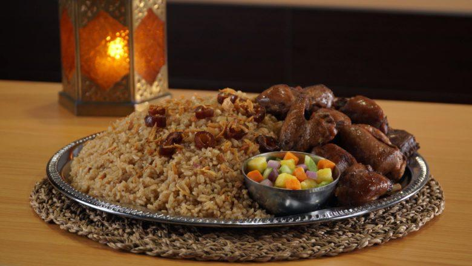

Resep Nasi Kebuli
Bahan
- 500 g beras, cuci bersih
- 700 g daging ayam, potong 12 bagian, buang kulit
- 2 sdm ketumbar bubuk
- 1 sdt jintan bubuk
- 1 sdt pala bubuk
- 1 sdt kayu manis bubuk
- 6 butir kapulaga
- 2 Royco Kaldu Ayam
- 1 sdt cengkih bubuk
- 1.2 L air
- 3 sdm minyak samin
- 1 batang serai
- ½ sdt garam
- ½ sdt merica putih bubuk
- 100 g kurma, buang biji, potong-potong
Bumbu Halus
- 10 butir bawang merah
- 10 siung bawang putih
- 3 cm jahe
- 2 sdt minyak
Pelengkap
Cara Membuat
- Panaskan minyak, tumis bumbu halus hingga harum. Masukkan ketumbar, jintan, pala, kayu manis, kapulaga, dan cengkih. Tumis hingga harum dan matang.
- Masukkan daging ayam, aduk. Tuang air dan Royco Kaldu Ayam, aduk rata. Masak hingga daging ayam empuk. Angkat. Keluarkan daging ayam. Sisihkan.
- Panaskan minyak samin, tumis beras sebentar hingga bercampur rata. Masukkan serai, garam, dan merica. Tuang 750 ml air dari rebusan daging ayam, aduk rata. Masak hingga airnya terserap habis. Angkat. Kukus dalam dandang panas hingga matang.
- Panaskan minyak, goreng daging ayam hingga kecokelatan. Angkat.
- Sajikan nasi kebuli dengan daging ayam dan pelengkap.